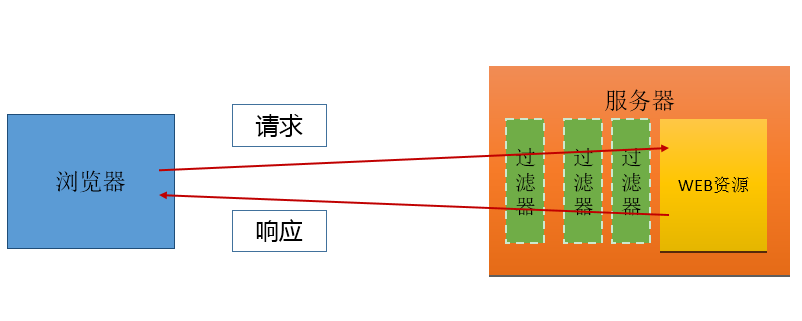

对于WEB应用来说，过滤器是一个驻留在服务器中的WEB组件，他可以截取客户端和WEB资源之间的请求和响应信息。
在一个WEB应用中可以部署多个过滤器，多个过滤器就组成了一个过滤器链，请求和响应必须在经过多个过滤器后才能到达目标
当配置多个Filter以后就有一个执行顺序的问题，实际执行顺序是按照在web.xml文件中servlet-mapping的顺序决定的，如果顺序越靠前越先被调用。

作用：1.检查用户访问权限
doFilter(ServletRequest,ServletResponse,FilterChain)作用和service()方法类似，是过滤请求和响应的主要方法。
getFilterName() 获取Filter的名字
getServletContext() 获取ServletContext对象（即application）
getInitParameter(String) 获取Filter的初始化参数
web.xml文件中的Filter配置
<filter-mapping>
<!-- Filter的名字 -->
<filter-name>Filter1</filter-name>
<!-- Filter1的过滤地址,表示过滤http://127.0.0.1:8080/day17/admin/user.jsp-->
<url-pattern>/admin/user.jsp</url-pattern>
</filter-mapping>
除此之外在filter-mapping还有一个子标签dispatcher，该标签用来指定需要Filter处理的请求类型
<!-- 用户直接访问资源时，会调用Filter -->
<dispatcher>REQUEST</dispatcher>
<!-- 通过转发访问时，会调用Filter -->
<dispatcher>FORWARD</dispatcher>
<!-- 通过动态包含获取时，会调用Filter -->
<dispatcher>INCLUDE</dispatcher>
<!-- 当通过异常处理访问页面时，会调用Filter -->
<dispatcher>ERROR</dispatcher>
这四种情况可以设置一个，也可以同时设置多个，如果不设置那么默认为REQUEST
然后执行Filter的init()方法，对象创建后，马上就被调用，对Filter做一些初始化操作
执行Filter的doFilter()方法，每次访问目标资源，只要匹配过滤的地址，就会调用。
获取Filter在web.xml文件中配置的名称
获取Filter在web.xml文件中配置的初始化参数
// 获取Filter的名称
String filterName = filterConfig.getFilterName();// 获取初始化参数。username的值
String username = filterConfig.getInitParameter("username");// 获取ServletContext的对象实例
ServletContext ctx = filterConfig.getServletContext();
一般Filter.doFilter中的代码分为三段：
第一段是FilterChain.doFilter之前的代码。一般用来做请求的拦截，检查用户访问的权限，访问日记的记录。参数编码的设置等等操作。
第二段是FilterChain.doFilter方法。此方法可以将代码的执行传递到下一个Filter中。或者是传递到用户最终访问的资源中。
第三段是FilterChain.doFilter之后的代码。主要用过做一些日志操作。我们很少会在第三段中做太多复杂的操作。
主要有以下两种
精确匹配：/路径/资源名
比如：/index.html、/hello/index.jsp 、 /client/LoginServlet 等，只有在请求地址完全一样时才会调用Filter
目录匹配：/路径名/*
比如1：/abc/* 表示可以拦截abc目录下的所有资源，甚至是abc目录下的其他目录。
比如2：/* 表示只要访问项目根目录下的资源就会调用Filter
后缀名匹配：*.后缀名
比如：*.jsp 表示拦截所有后缀为jsp文件资源
第二种：通过filter-mapping中的servlet-name来指定要过滤的Servlet
在Filter的filter-mapping中增加了一个servlet-name标签，将该标签的值设置成Servlet的名字，在访问Servlet时就会调用该过滤器过滤请求。 <filter-mapping>
<filter-name>HelloFilter</filter-name>
<servlet-name>HelloServlet</servlet-name>
</filter-mapping>
Listener用于监听JavaWeb程序中的事件，当事件被触发时，监听器中的指定方法将会被调用。
作用：监听ServletContext对象的创建与销毁
方法：
public void contextInitialized ( ServletContextEvent sce )：ServletContext创建时调用
public void contextDestroyed ( ServletContextEvent sce )：ServletContext销毁时调用
ServletContextEvent对象
作用：public ServletContext getServletContext ()：获取ServletContext对象
HttpSessionListener
作用：监听HttpSession对象的创建与销毁
方法：
public void sessionCreated ( HttpSessionEvent se )：HttpSession对象创建时调用
public void sessionDestroyed ( HttpSessionEvent se )：HttpSession对象销毁时调用
HttpSessionEvent对象
作用：public HttpSession getSession ()：获取当前HttpSession对象
ServletRequestListener
作用：监听ServletRequest对象的创建与销毁
方法：
public void requestInitialized ( ServletRequestEvent sre )：ServletRequest对象创建时调用
public void requestDestroyed ( ServletRequestEvent sre )：ServletRequest对象销毁时调用
ServletRequestEvent对象
作用：
public ServletRequest getServletRequest ()：获取当前的ServletRequest对象。
三种创建与销毁的监听器使用起来基本一致。
在web.xml文件中注册监听器
<listener>
<listener-class>com.web.listener.MyServletContextListener</listener-class>
</listener>
作用：监听ServletContext中属性的创建、修改和销毁
方法：
public void attributeAdded(ServletContextAttributeEvent scab)：向ServletContext中添加属性时调用
public void attributeRemoved(ServletContextAttributeEvent scab)：从ServletContext中移除属性时调用
public void attributeReplaced(ServletContextAttributeEvent scab)：当ServletContext中的属性被修改时调用
ServletContextAttributeEvent对象
作用：
public String getName() ：获取修改或添加的属性名
public Object getValue()：获取被修改或添加的属性值
public ServletContext getServletContext ()：获取当前WEB应用的ServletContext对象
HttpSessionAttributeListener
作用：监听HttpSession中属性的创建、修改和销毁
方法：
public void attributeAdded ( HttpSessionBindingEvent se )：向HttpSession中添加属性时调用
public void attributeRemoved(HttpSessionBindingEvent se)：从HttpSession中移除属性时调用
public void attributeReplaced(HttpSessionBindingEvent se)：当HttpSession中的属性被修改时调用
HttpSessionBindingEvent对象
作用：
public String getName() ：获取修改或添加的属性名
public Object getValue()：获取被修改或添加的属性值
public HttpSession getSession ()：获取当前的HttpSession对象
ServletRequestAttributeListener
作用：监听ServletRequest中属性的创建、修改和销毁
方法：
public void attributeAdded (ServletRequestAttributeEvent srae ):向ServletRequest中添加属性时调用
public void attributeRemoved(ServletRequestAttributeEvent srae):从ServletRequest中移除属性时调用
public void attributeReplaced(ServletRequestAttributeEvent srae)：当ServletRequest中的属性被修改时调用
ServletRequestAttributeEvent对象
作用：
public String getName()：获取修改或添加的属性名
public Object getValue()：获取被修改或添加的属性值
作用：监听某个对象在session域中的创建与移除。
方法：
public void valueBound(HttpSessionBindingEvent event)：该类的实例被放到Session域中时调用
public void valueUnbound(HttpSessionBindingEvent event)：该类的实例从Session中移除时调用
HttpSessionBindingEvent对象
作用：
public HttpSession getSession ()：获取HttpSession对象
public String getName()：获取操作的属性名
public Object getValue()：获取操作的属性值
作用：监听某个对象在session中的序列化与反序列化。
方法：
public void sessionWillPassivate(HttpSessionEvent se)：该类实例和Session一起钝化到硬盘时调用
public void sessionDidActivate(HttpSessionEvent se)：该类实例和Session一起活化到内存时调用
HttpSessionEvent对象
作用：
public HttpSession getSession ()：获取HttpSession对象
注意：为被监听类对象可以正常序列化到硬盘上，还需要让该类实现java.io.Serializable接口